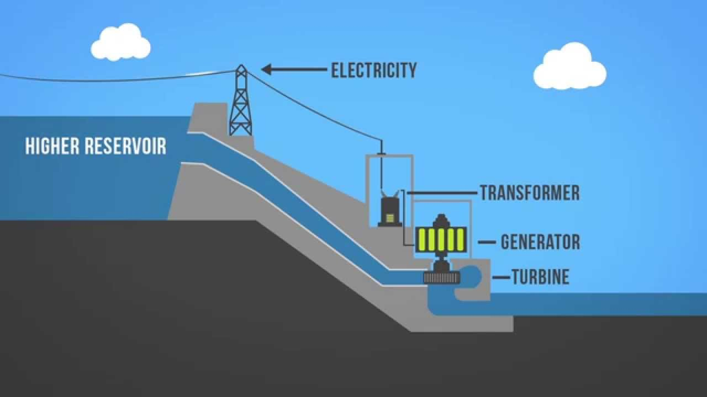
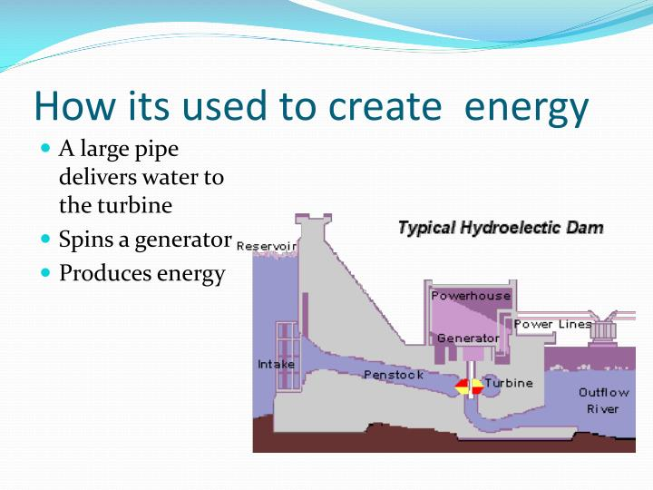
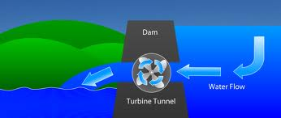
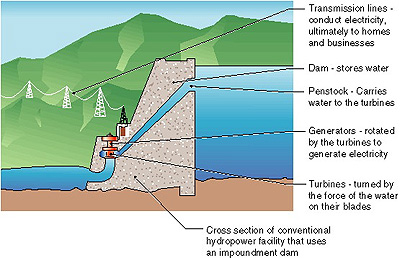

About 3,200,000,000 results (0.80 seconds)

How do dams generate power? - Quora

Tanisslous @ Tamaki Primary School: How a hydro-dam creates electricity

Hydroelectric - Key Stage Wiki

How to Generate Electricity | How is Electricity Generated

Hydropower - 8th Science - Energy - LibGuides at Tuscarora School District

Untitled [theenergyofwater.weebly.com]

how does the windmill and dam help to produce electricity - Science ...

Hydropower: Generate Energy with Rivers and Ocean Tides - dummies

The flow of water produces hydroelectricity.

Hydroelectric Energy
- 
Hydropower 101 - YouTube
- 
PPT - Hydropower and Dams PowerPoint Presentation - ID:2855433

Hydroelectric Power
- 
Renewable energy
These Dams Generate The Highest Amount of Electricity In The World
- 
Hydropower - Open Source Learning